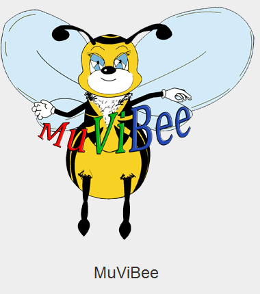

MuViBee
Music, Video & Book Libary
Version 1.0

This program was developed during the lecture Programmieren 3
on the Hochschule für Technik und Wirtschaft des Saarlandes.
created by:
- Tim Bartsch
- Stanislav Tartakowski
- Christian Rech
- Lucian Schneider
- Thomas Altmeyer
- Dominik Janßen
- Tobias Lana
- Volkan Goekayya
- Yasir Klose
Used libraries:
HtmlCleaner 2.0 (distributed under BSD License) http://htmlcleaner.sourceforge.net/license.php
HyperSQL (based on BSD License) http://hsqldb.org/web/hsqlLicense.html
Icon licenses:
All used Icons are free for non commercial use
GPL; Icons Dark Glass By: Alessandro Rei
Creative Commons: by Limpa (Björn Lindberg) | CV Icons
Flag icons By: IconDrawer Free for commercial use (http://www.icondrawer.com)
CD Icon 2006-2007 Everaldo Coelho. under LGPL (http://www.everaldo.com/)